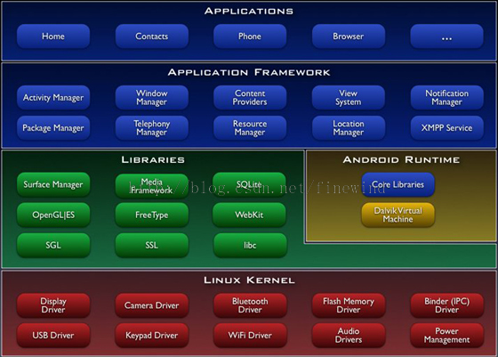

android系统架构及源码目录结构
手机版 Amazon Price Tracker
- 当前位置：分享查询网 > 硬件/嵌入开发 > 智能电视 >android系统架构及源码目录结构
1. android系统架构：
android系统架构采用了分层架构的思想，如下图所示，从上到下共4层，分别为：应用程序层、应用程序框架层、系统库和android运行时层、linux内核层。

每层功能简要介绍如下：
应用程序层（JAVA应用程序）：
该层提供一些核心应用程序包，例如电子邮件、短信、日历、地图、浏览器和联系人管理等。同时，开发者可以利用Java语言设计和编写属于自己的应用程序，而这些程序与那些核心应用程序彼此平等、友好共处。
应用程序框架层（JAVA框架）：
该层是Android应用开发的基础，开发人员大部分情况是在和她打交道。应用程序框架层包括活动管理器、窗口管理器、内容提供者、视图系统、包管理器、电话管理器、资源管理器、位置管理器、通知管理器和XMPP服务十个部分。在Android平台上，开发人员可以完全访问核心应用程序所使用的API框架。并且，任何一个应用程序都可以发布自身的功能模块，而其他应用程序则可以使用这些已发布的功能模块。基于这样的重用机制，用户就可以方便地替换平台本身的各种应用程序组件。
系统库和android运行时层（本地框架和JAVA运行环境）：
系统库包括九个子系统，分别是图层管理、媒体库、SQLite、OpenGLEState、FreeType、WebKit、SGL、SSL和libc。
Android运行时包括核心库和Dalvik虚拟机，前者既兼容了大多数Java语言所需要调用的功能函数，又包括了Android的核心库，比如android.os、android.net、android.media等等。后者是一种基于寄存器的java虚拟机，Dalvik虚拟机主要是完成对生命周期的管理、堆栈的管理、线程的管理、安全和异常的管理以及垃圾回收等重要功能。
LINUX内核层：
Android核心系统服务依赖于Linux内核，如安全性、内存管理、进程管理、网络协议栈和驱动模型。Linux内核也是作为硬件与软件栈的抽象层。
驱动：显示驱动、摄像头驱动、键盘驱动、WiFi驱动、Audio驱动、flash内存驱动、Binder（IPC）驱动、电源管理等。
2. android源码目录结构：
Android 5.1 |-- Makefile |-- abi |-- art |-- bionic （bionic C库） |-- bootable （启动引导相关代码） |-- build （存放系统编译规则及generic等基础开发包配置） |-- cts （Android兼容性测试套件标准） |-- dalvik （dalvik JAVA虚拟机） |-- developers |-- development （应用程序开发相关） |-- device |-- docs |-- external （android使用的一些开源的模组） |-- frameworks （核心框架——java及C++语言） |-- hardware （部分厂家开源的硬解适配层HAL代码） |-- kernel |-- libcore |-- libnativehelper |-- ndk |-- out （编译完成后的代码输出与此目录） |-- packages （应用程序包） |-- pdk |-- prebuilts （x86和arm架构下预编译的一些资源） |-- sdk （sdk及模拟器） |-- system （底层文件系统库、应用及组件——C语言） |-- tools `-- vendor （厂商定制代码） bionic 目录 |-- benchmarks |-- libc （C库） | |-- arch-arm （ARM架构，包含系统调用汇编实现） | |-- ... | |-- bionic （由C实现的功能，架构无关） | |-- dns | |-- include （头文件） | |-- kernel （Linux内核中的一些头文件） | |-- private （？一些私有的头文件） | |-- stdio （stdio实现） | |-- tools （几个工具） | |-- tzcode （时区相关代码） | |-- upstream-dlmalloc | |-- upstream-freebsd | |-- upstream-netbsd | |-- upstream-openbsd | `-- zoneinfo （时区信息） |-- libdl （libdl实现，dl是动态链接，提供访问动态链接库的功能） |-- libm （libm数学库的实现，） |-- libstdc++ （libstdc++ C++实现库） |-- linker （动态链接器） `-- test bootable 目录 |-- bootloader （适合各种bootloader的通用代码） | |-- legacy （估计不能直接使用，可以参考） | `-- lk `-- recovery （系统恢复相关） | |-- edify （升级脚本使用的edify脚本语言） | |-- etc （init.rc恢复脚本） | |-- minui （一个简单的UI） | |-- minzip （一个简单的压缩工具） | |-- mtdutils （mtd工具） | |-- res （资源） | |-- tools （工具） | | `-- ota （OTA Over The Air Updates升级工具） | `-- updater （升级器） build目录 |-- core （核心编译规则） |-- libs | `-- host （主机端库，有android “cp”功能替换） |-- target （目标机编译对象） | |-- board （开发平台） | |-- product （开发平台对应的编译规则） `-- tools （编译中主机使用的工具及脚本） dalvik目录 dalvik虚拟机 |-- dexdump （dex反汇编） |-- dexgen |-- dexlist （List all methods in all concrete classes in a DEX file.） |-- docs （文档） |-- dx （dx工具，将多个java转换为dex） |-- hit （？java语言写成） |-- opcode-gen |-- tools （工具） `-- vm （虚拟机实现） development 目录 （开发者需要的一些例程及工具） |-- apps （一些核心应用程序） | |-- BluetoothDebug （蓝牙调试程序） | |-- CustomLocale （自定义区域设置） | |-- Development （开发） | |-- Fallback （和语言相关的一个程序） | |-- FontLab （字库） | |-- GestureBuilder （手势动作） | |-- NinePatchLab （？） | |-- OBJViewer （OBJ查看器） | |-- SdkSetup （SDK安装器） | |-- SpareParts （高级设置） | |-- Term （远程登录） | `-- launchperf （？） |-- build （编译脚本模板） |-- cmds （有个monkey工具） |-- docs （文档） |-- host （主机端USB驱动等） |-- ide （集成开发环境） |-- libraries |-- ndk （本地开发套件——c语言开发套件） |-- samples （例程） | |-- AliasActivity （？） | |-- ApiDemos （API演示程序） | |-- BluetoothChat （蓝牙聊天） | |-- BrowserPlugin （浏览器插件） | |-- BusinessCard （商业卡） | |-- Compass （指南针） | |-- ContactManager （联系人管理器） | |-- CubeLiveWallpaper （动态壁纸的一个简单例程） | |-- FixedGridLayout （像是布局） | |-- GlobalTime （全球时间） | |-- HelloActivity （Hello） | |-- Home （Home） | |-- JetBoy （jetBoy游戏） | |-- LunarLander （貌似又是一个游戏） | |-- MailSync （邮件同步） | |-- MultiResolution （多分辨率） | |-- MySampleRss （RSS） | |-- NotePad （记事本） | |-- RSSReader （RSS阅读器） | |-- SearchableDictionary （目录搜索） | |-- SimpleJNI （JNI例程） | |-- SkeletonApp （空壳APP） | |-- Snake （snake程序） | |-- SoftKeyboard （软键盘） | |-- Wiktionary （？维基） | `-- WiktionarySimple（？维基例程） |-- scripts （脚本） |-- sdk （sdk配置） |-- sdk_overlay |-- sys-img |-- testrunner （？测试用） |-- tools （一些工具） `-- tutorials external 目录 |-- apache-http （网页服务器） |-- bison （自动生成语法分析器，将无关文法转换成C、C++） |-- blktrace （blktrace is a block layer IO tracing mechanism） |-- bluetooth （蓝牙相关、协议栈） |-- bsdiff （diff工具） |-- bzip2 （压缩工具） |-- dhcpcd （DHCP服务） |-- e2fsprogs （EXT2文件系统工具） |-- elfcopy （复制ELF的工具） |-- elfutils （ELF工具） |-- embunit （Embedded Unit Project） |-- emma （java代码覆盖率统计工具） |-- esd （Enlightened Sound Daemon，将多种音频流混合在一个设备上播放） |-- expat （Expat is a stream-oriented XML parser.） |-- fdlibm （FDLIBM (Freely Distributable LIBM)）
参考资料：
android系统架构： http://blog.csdn.net/wangloveall/article/details/8033725
android源码结构： http://www.cnblogs.com/shaweng/p/4043573.html
相关文章

最近更新
- sap信贷管理的操作流程
- Ninja自己的技术栈
- sdk不能更新
- 去除inline-block元素间间距的N种方法
- Mysql主从复制配置笔记
- Android Studio1.0升级到1.5编译报错的处理
- CMake 编程简介
- 命令行之2048
- iOS开发--系统通讯录的访问与添加联系人
- 面向对象编程(十三)——面向对象三大特性之封装
- WCF RESTFUL SERVICE
- 电影推荐
- fatal error C1083: 无法打开源文件
- bootstrap中使用日历控件
- Hibernate主要查询方式
- 绝对定位对margin外边距的影响
- enable apache2 rewrite_mod on ubuntu14.04
- 单例初始化（MRC模式之autorelease）
- VoHelper
- tab使用 TabActivity TabHost Tabspec常用方法